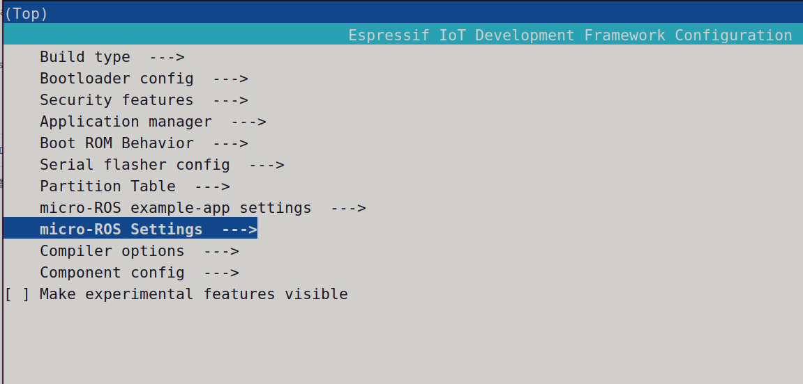
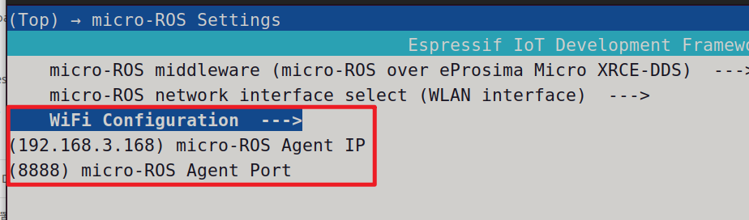
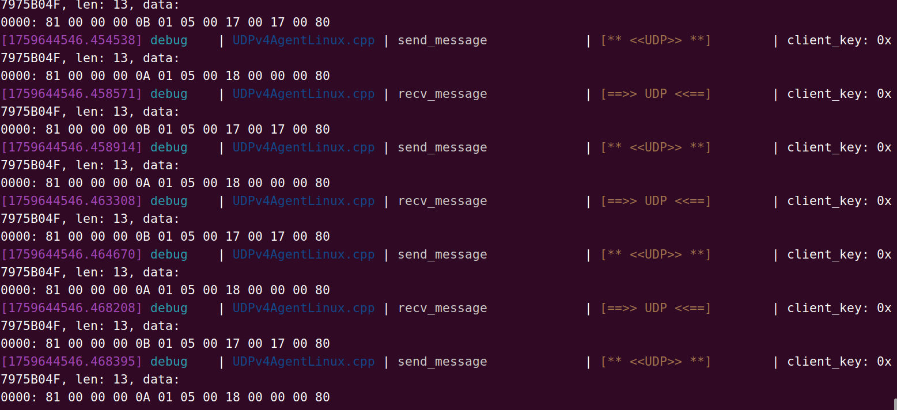

<!DOCTYPE lake>
<p data-lake-id="uf9ae30b9" id="uf9ae30b9"><span data-lake-id="u0a1cb6d1" id="u0a1cb6d1">参考文档：</span><a data-lake-id="u5ad5a3bd" href="https://github.com/micro-ROS/micro_ros_espidf_component" id="u5ad5a3bd" rel="noopener noreferrer" target="_blank"><span data-lake-id="u2e916b39" id="u2e916b39">https://github.com/micro-ROS/micro_ros_espidf_component</span></a></p><p data-lake-id="u47e8a374" id="u47e8a374"><span data-lake-id="ud61bf5fa" id="ud61bf5fa">本案例需要依赖如下版本：</span></p><p data-lake-id="u9322300c" id="u9322300c"><span data-lake-id="ub297b79c" id="ub297b79c">ROS2</span></p><p data-lake-id="u4787a720" id="u4787a720"><span data-lake-id="u079260a4" id="u079260a4">idf5.4.2</span></p><h2 data-lake-id="EZPbg" id="EZPbg"><span data-lake-id="uc4769c01" id="uc4769c01">下位机</span></h2><p data-lake-id="u39ed2022" id="u39ed2022"><span data-lake-id="u27ba3ee2" id="u27ba3ee2">安装额外依赖</span></p><span class="yuque-card-unsupported">[codeblock]</span><p data-lake-id="ubf747108" id="ubf747108"><span data-lake-id="u95b86419" id="u95b86419">运行配置文件</span></p><span class="yuque-card-unsupported">[codeblock]</span><p data-lake-id="u7d74e780" id="u7d74e780"><span data-lake-id="u95abf6f3" id="u95abf6f3">配置wifi账号和密码</span></p><span class="yuque-card-unsupported">[codeblock]</span><p data-lake-id="u861a4c3e" id="u861a4c3e"></p><p data-lake-id="u665687ca" id="u665687ca"></p><p data-lake-id="u2f36bd54" id="u2f36bd54"><span data-lake-id="u0eea3bfe" id="u0eea3bfe">编译</span></p><span class="yuque-card-unsupported">[codeblock]</span><p data-lake-id="u70441d3f" id="u70441d3f"><span data-lake-id="ue3716824" id="ue3716824">下载</span></p><span class="yuque-card-unsupported">[codeblock]</span><p data-lake-id="ud215fcb0" id="ud215fcb0"><span data-lake-id="u0d6ba785" id="u0d6ba785">查看日志</span></p><span class="yuque-card-unsupported">[codeblock]</span><p data-lake-id="u1c2b61b8" id="u1c2b61b8"><br/></p><p data-lake-id="u61336f60" id="u61336f60"><br/></p><p data-lake-id="u8531c9fd" id="u8531c9fd"><br/></p><h2 data-lake-id="pN6qL" id="pN6qL"><span data-lake-id="u61c9d8f2" id="u61c9d8f2">上位机</span></h2><p data-lake-id="u6be74c94" id="u6be74c94"><span data-lake-id="u919dda1c" id="u919dda1c">新建工作空间</span></p><span class="yuque-card-unsupported">[codeblock]</span><p data-lake-id="u9b600646" id="u9b600646"><span data-lake-id="u1248706b" id="u1248706b">安装上位机客户端</span></p><p data-lake-id="uc6b3a99e" id="uc6b3a99e"><span data-lake-id="u87fdd6cf" id="u87fdd6cf">进到src目录克隆下面这两个包</span></p><span class="yuque-card-unsupported">[codeblock]</span><p data-lake-id="ubd12a87c" id="ubd12a87c"><span data-lake-id="ub304fdeb" id="ub304fdeb">编译项目</span></p><span class="yuque-card-unsupported">[codeblock]</span><p data-lake-id="u625187c1" id="u625187c1"><br/></p><p data-lake-id="u4167f8a0" id="u4167f8a0"><span data-lake-id="u9cebe354" id="u9cebe354">启动客户端</span></p><span class="yuque-card-unsupported">[codeblock]</span><p data-lake-id="u746c19c5" id="u746c19c5"></p><p data-lake-id="u5867ef6d" id="u5867ef6d"><br/></p>